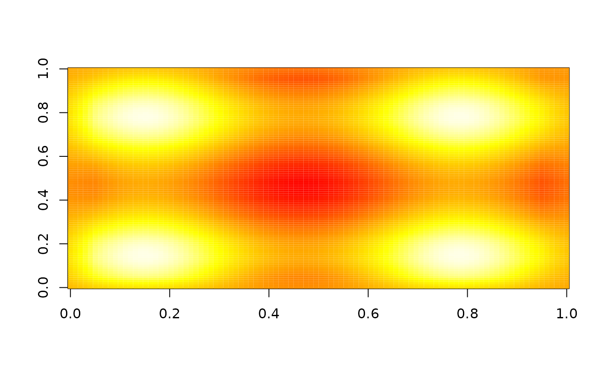
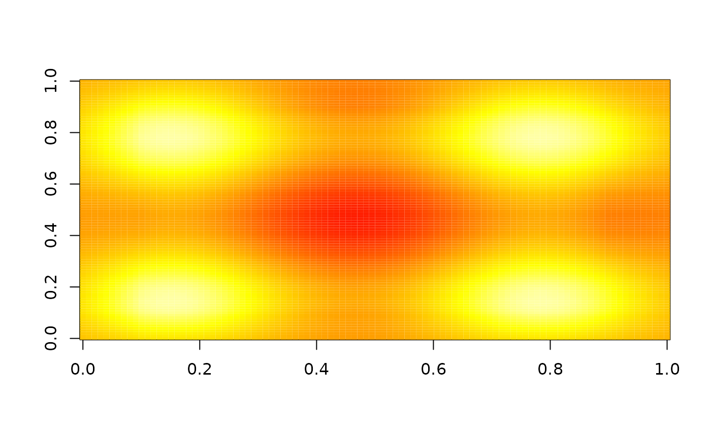
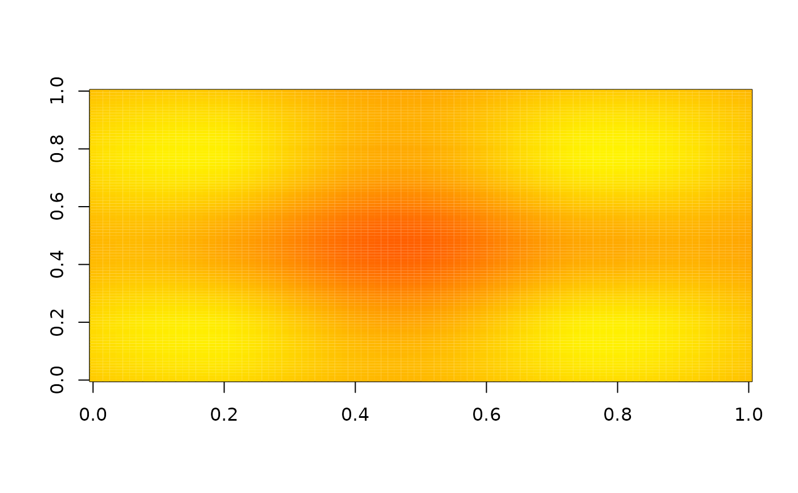
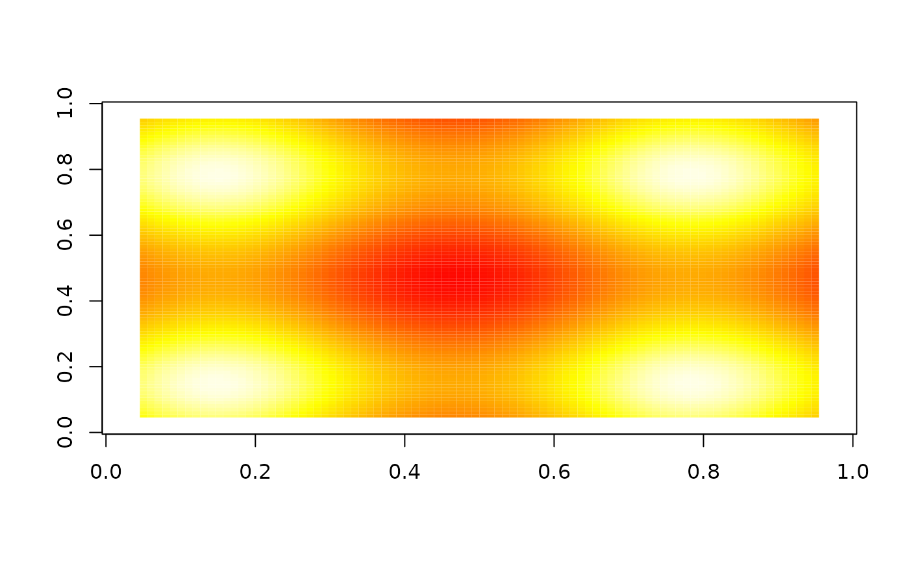
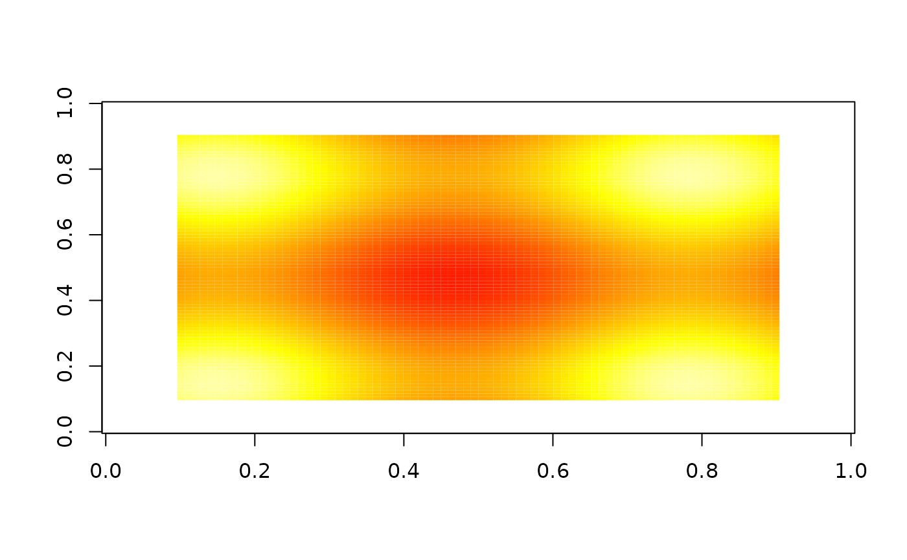
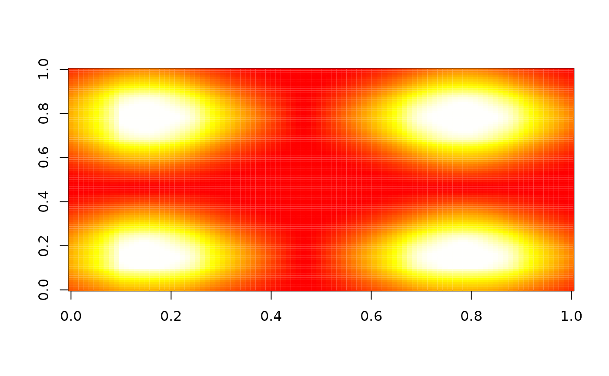
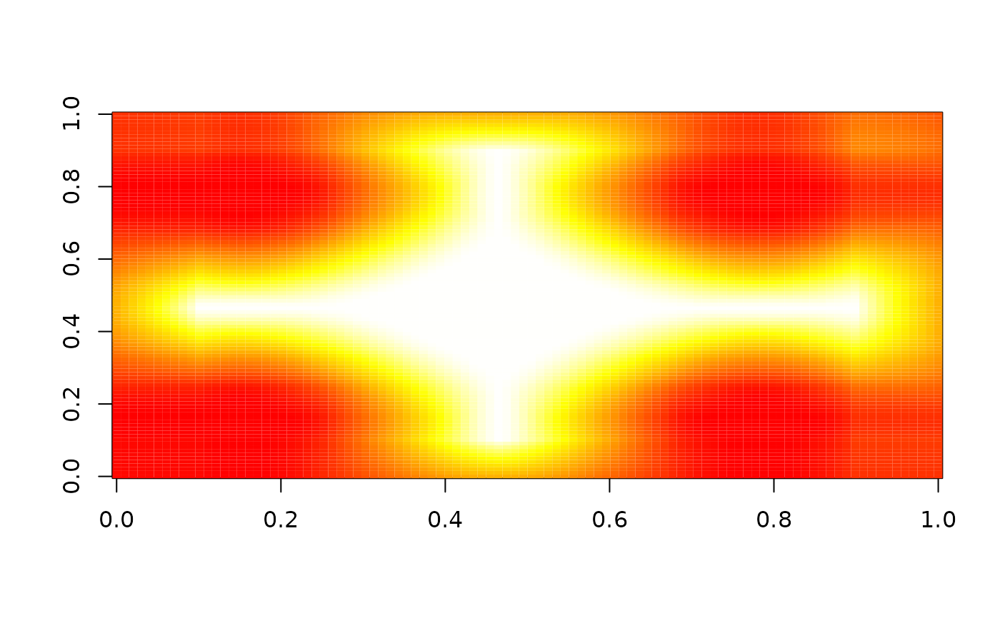
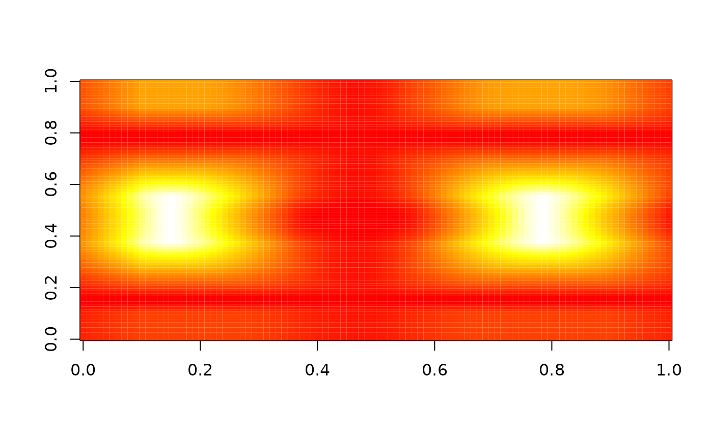

nbhd_smooth takes a 2d field, and for each pixel in that field a
square neighbourhood is constructed with a specified radius - that is the
number of pixels to the left/right and above/below the pixel at the
neighbourhood centre. For each pixel, the mean value of the pixels in the
neighbourhood is returned resulting in a smoothed field on the same grid as
the original field.
Usage
nbhd_smooth(
x,
radius,
threshold = NA,
comparator = c("ge", "gt", "le", "lt", "between", "outside"),
include_low = TRUE,
include_high = TRUE,
boundary = c("zero_pad", "missing")
)
cumsum_2d(
x,
threshold = NA,
comparator = c("ge", "gt", "le", "lt", "between", "outside"),
include_low = TRUE,
include_high = TRUE
)
nbhd_smooth_cumsum(x, radius, boundary = c("zero_pad", "missing"))Arguments
- x
A 2d array, geofield or geolist.
- radius
The radius of the neighbourhood in pixels.
- threshold
A threshold for computing binary probabilities. If
comparator = "between", it must be a two element vector. Set to NA to use the raw data.- comparator
How to compare
xwith the threshold to compute binary probabilities. Can be"ge","gt","le", or"lt"for >=, >, <= and < respectively. Can also be"between"or"outside", in which case the binary probability of being between or outside of the two values given inthresholdis computed.- include_low
Logical. Whether to include to the lower of the two thresholds in the comparison when
comparator = "between"orcomparator = "outside".- include_high
Logical. Whether to include to the higher of the two thresholds in the comparison when
comparator = "between"orcomparator = "outside".- boundary
How to treat the boundaries. Current options are
"zero_pad"and"missing". See Details for more information on these options.
Details
For pixels that are closer to the edge of the input field than the radius
there are two options. The default is to zero pad the field outwards with
pixels outside of the original field set to zero. If
boundary = "missing" the pixels closer to the edge than the radius
will be set to missing.
The neighbourhood means are computed by first calculating the cumulative sum
of the array from the top left to the bottom right and then computing the
total for each neighbourhood by subtraction. This means that the algorithm
is equally efficient regardless of the neighbourhood size. It is possible
to compute each stage at a time with fist cumsum_2d and then
nbhd_smooth_cumsum.
If a threshold is given, the binary probability of the input field compared
with the threshold is computed at each pixel before applying the function.
By default the comparison is x >= threshold, but other comparisons
can be chosen using the comparator argument.
Examples
# Create a 2d array
z <- array(dim = c(100, 100))
for (i in 1:100) {
for (j in 1:100) {
z[i, j] <- sin(i / 10) + sin(j / 10)
}
}
image(z, zlim = range(z), col = heat.colors(255))
# With zero-padding the input array
image(nbhd_smooth(z, 5), zlim = range(z), col = heat.colors(255))

image(nbhd_smooth(z, 10), zlim = range(z), col = heat.colors(255))

image(nbhd_smooth(z, 20), zlim = range(z), col = heat.colors(255))

# Without zero padding
image(nbhd_smooth(z, 5, boundary = "missing"), zlim = range(z), col = heat.colors(255))

image(nbhd_smooth(z, 10, boundary = "missing"), zlim = range(z), col = heat.colors(255))

# Add a threshold
image(nbhd_smooth(z, 10, 0.5), zlim = c(0, 1), col = heat.colors(255))

image(nbhd_smooth(z, 10, 0.5, "lt"), zlim = c(0, 1), col = heat.colors(255))

image(nbhd_smooth(z, 10, c(-0.5, 0.5), "between"), zlim = c(0, 1), col = heat.colors(255))

image(nbhd_smooth(z, 10, c(-0.5, 0.5), "outside"), zlim = c(0, 1), col = heat.colors(255))